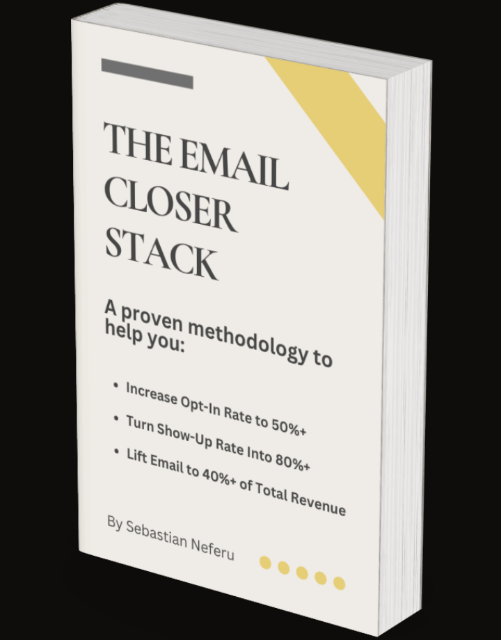

Full-Stack Email Ghostwriter
Most coaches sit on email lists worth $500K+ in untapped revenue. I build the ghostwritten email systems that capture, nurture, and convert those subscribers into booked sales calls, on autopilot. Built specifically for high-ticket operations running setter-closer teams.
Currently accepting 5 new clients for Q2 2026.
Book Your Free Strategy Consultation →02 — The Email Revenue Gap
In the highest-performing coaching businesses with setter-closer teams, email contributes 40%+ of total revenue. If that number is under 15% for you, read on.
The reason is because you've never had a real email system; just a list and someone sending the occasional broadcast to all of it. No conversion-optimized opt-in. No welcome sequence warming cold subscribers into believers. No daily broadcasts in your voice. No automations handling no-shows, re-engagement, win-backs.
When this happens, every lead source underperforms — including your 20-$50K+ monthly ad spend — because you're not optimally capturing traffic and converting it into warm leads, which creates a compounding problem where cold subscribers drag down your deliverability, your open rates drop, and you end up spending more just to generate the same number of calls.
Until all of a sudden you're looking at thousands of subscribers who raised their hand and never heard from you again. Not an email list. A graveyard of missed revenue.
What I do is build and ghostwrite the complete 18-step email system that closes that gap, turning the graveyard into a goldmine of Growth, Authority, and Revenue.
The reason I recommend a full-stack system rather than individual fixes is because a better subject line doesn't close the 25%+ revenue gap. A new welcome sequence alone doesn't close it. Only a complete system does.
And the benefit of having that system in place is that email becomes the most profitable channel in your business: warmer leads for your closers, better show rates for your setters, and a compounding asset where the calls you book today come from subscribers who entered months ago.
All of which means you stop leaving revenue on the table and start building the one channel that pays for itself without a single additional dollar in ad spend.
That's what I build.
03 — The Method
A three-pillar system that transforms your email list from an underperforming database into a predictable booked-call engine.
The Growth Engine
Capture & Own
Educational Email Course Ghostwriting
The foundation. I audit your current opt-in, then build a complete capture-to-call system:
A high-converting landing page, a 5-day Educational Email Course that builds trust and presells, an Objection Bridge sequence, a FOMO close sequence, analytics tracking, and ongoing optimization for up to 30 days.
Subscribers who join your list come out the other end ready to book a call and buy.
30–50% opt-in conversion
vs. the 1–2% industry average
The Authority Engine
Nurture & Warm
Newsletter Ghostwriting
Once your list is growing, we warm up leads. I ghostwrite weekly thought leadership newsletters in your voice:
The kind of 800–1,200 word pillar content that positions you as the trusted authority in your space...plus weekly direct-response check-in emails that gently nudge readers towards your offer.
Your name stays top-of-mind, and every piece drives readers toward the next step.
Flagship content every week
Evergreen thought leadership asset library
The Revenue Engine
Convert & Close
Full-Stack Email Ghostwriting
The full list monetization system. 40 emails per month, split between daily broadcasts and automation workflows:
I handle strategy, copy, tech setup, automated sequences for every stage of the subscriber journey, deliverability, segmentation, compliance, setter support, and weekly performance reporting.
Everything is ghostwritten in your voice. Your audience never knows I exist.
Email 40%+ of total revenue
vs. under 15% industry average
Each engine is a phase of one integrated system: built to your scope, managed as a single engagement. On your strategy consultation, I diagnose which components your business needs most and build accordingly.
04 — The System
The Email Closer Stack is an 18-component system. Every engagement is scoped on a strategy call based on what your business needs, whether that's a single component built as a one-off project, or the full system installed and managed on retainer. No two implementations are identical, because no two businesses are at the same stage.
A comprehensive audit of your current email infrastructure: opt-in pages, sequences, list health, segmentation, deliverability, and revenue attribution. I map what exists, identify the highest-leverage gaps, and architect the complete system before a single word is written.
Deliverables
Full email audit report with benchmarks
System architecture document
Competitive landscape analysis
Priority roadmap with recommended build order
The entry point to your funnel. I build a high-converting opt-in page designed to capture 30–50% of visitors...not the 1–2% most coaches get. Copy, layout, tech setup, and integration with your ESP and tracking.
Deliverables
Conversion-optimized landing page copy
Page build and tech integration
A/B testing framework for headlines and CTAs
Tracking and analytics setup
The cornerstone of the Growth Engine. A 5-day Educational Email Course that educates cold subscribers, presells your methodology, and positions the call as the natural next step. Followed by a 6-day Objection Bridge that handles every reason they haven't booked yet, and a 3-day FOMO close that creates urgency without desperation.
Deliverables
5-day Educational Email Course (ghostwritten in your voice)
6-day Objection Bridge sequence
3-day FOMO close sequence
Subject line A/B testing framework
Complete automation setup in your ESP
The bridge between email engagement and your setter's calendar. Calendar tool integration with confirmation emails, reminder sequences, and pre-call preparation materials. Every touchpoint is designed to maximize show rates and ensure your setters walk into each call with context on the prospect.
Deliverables
Application and call booking email sequence
Confirmation and reminder automation
Pre-call preparation emails for prospects
Calendar integration with your booking tool
Automated sequence that fires when a booked prospect doesn't show. Re-engages them, addresses likely hesitations, and drives rebooking. Recovers revenue that would otherwise disappear, because a no-show isn't a lost lead, it's an unfinished conversation.
Deliverables
Multi-email no-show recovery sequence
Rebooking automation with calendar integration
Behavioral triggers based on engagement after missed call
For leads who had a call but didn't close (yet). This sequence keeps you top-of-mind, reinforces the value of your offer, and addresses the specific hesitations that emerged on the call. Timed touchpoints bring them back to booking when they're ready.
Deliverables
Post-call nurture sequence (graduated over 30/60/90 days)
Objection-specific follow-up emails
Re-booking automation triggers
Leads disqualified on the call aren't dead; they're just not ready yet. This long-term nurture sequence keeps them in your ecosystem with value-driven content, so when their situation changes (revenue grows, team expands, budget frees up), you're the first call they make.
Deliverables
Long-term DQ nurture sequence
Quarterly re-qualification check-in emails
Trigger-based reactivation when engagement signals change
If you run webinars, challenges, or live events, this is the email system that fills seats and converts attendees. Segmented by behavior: those who saw the CTA vs. those who didn't, those who attended vs. those who registered but missed it. Each segment gets the right follow-up.
Deliverables
Registration and confirmation sequence
Attendee follow-up (saw CTA / did not see CTA)
No-show replay and rebooking sequence
Post-event conversion sequence
The daily pulse of your email channel. Short, voice-matched broadcasts that keep your name in the inbox every single day: educational content, social proof, objection-clearing, soft and hard pitches, motivational stories, and relationship-building. This is what separates a coach who "has an email list" from a coach whose email list generates revenue daily.
Deliverables
Up to 30 broadcast emails per month (ghostwritten in your voice)
Strategic daily rotation framework
Idea Hub with evergreen topic pipeline
Quarterly high-intensity promotional campaigns designed to drive concentrated booking periods. Multi-email sequences with pre-launch warmup, segmented targeting, escalating urgency, and a final close. The kind of campaign that can generate six figures in a single push.
Deliverables
Full promotional campaign strategy and copy (every 3–4 months)
Pre-launch warmup sequence
Segmented send strategy based on engagement history
Post-campaign analysis and optimization notes
Targets subscribers who've gone cold, haven't opened or clicked in 30–60 days. Win-or-clean approach that either re-activates them or removes them to protect your deliverability and list quality. A healthy list isn't the biggest list; it's the most engaged one.
Deliverables
Multi-stage re-engagement sequence
Automated list hygiene rules
Win-back offers for high-value cold subscribers
None of this matters if your emails land in spam. I configure and monitor your full deliverability stack: authentication, domain reputation, inbox placement, blacklist removal, and list hygiene. This is the invisible infrastructure that every other component depends on.
Deliverables
SPF, DKIM, and DMARC authentication setup
Domain reputation monitoring (Mailreach & GlockApps)
Blacklist monitoring and removal
Inbox placement testing across Gmail, Outlook, Yahoo
Ongoing list hygiene and bounce management
Inboxing best practices implementation
Your setters and closers need to know what the prospect has seen, clicked, and engaged with before the call starts. I build the bridge between email and your sales floor: briefing documents, lead intelligence, and SMS/email swipes your closers can use to follow up.
Deliverables
Setter briefing documents and lead intelligence reports
SMS and email swipes for closers
Lead scoring based on email engagement
The intelligence layer that connects everything. I build a tagging architecture and automation rules that move subscribers between sequences based on their behavior: opens, clicks, page visits, booking actions, call outcomes. The system responds to what each subscriber does, not just when they joined.
Deliverables
Full segmentation architecture in your ESP
Tag taxonomy and automation rules
Behavioral trigger routing between sequences
Segment-specific content targeting
Most coaches use the default ESP unsubscribe page and lose subscribers permanently. I build a custom unsubscribe experience that offers frequency options, topic preferences, and a final value reminder, recovering subscribers who would otherwise be gone forever while improving your deliverability metrics.
Deliverables
Custom unsubscribe page with preference options
Frequency reduction alternative to full unsubscribe
A before-you-go high-value offer to recover unsubscribers
You need to know exactly what your email system is producing. I deliver weekly reports, both qualitative (what I'm seeing change, what's improving, what to adjust) and quantitative (opt-ins, open rates, click rates, call bookings, and revenue attribution). No vanity metrics. Only numbers tied to revenue.
Deliverables
Weekly quantitative reports (opt-ins, opens, clicks, bookings)
Weekly qualitative notes (observations, adjustments, opportunities)
Monthly revenue attribution analysis
Optimization recommendations
A 30-minute weekly call with you and your team. I walk through what's working, what's being tested, and what's next. These calls also serve as content ideation sessions and an opportunity for your team to deepen their understanding of the email system I'm building, so the system keeps working even when the engagement ends.
Deliverables
Weekly 30-minute strategy call
Content ideation and editorial planning
Team training on email system fundamentals
The Authority Engine. A weekly 800–1,200 word flagship newsletter, ghostwritten in your voice, that positions you as the definitive authority in your space. This isn't a recap or a content dump; it's a pillar piece that your audience looks forward to, shares with peers, and remembers when they're ready to buy.
Deliverables
4 weekly thought leadership newsletters (800–1,200 words)
Content ideation calls
Idea Hub with topic pipeline
Editorial review process
Written entirely in your voice
Can be repurposed across social media platforms
The full system delivers 40 emails per month — 30 daily broadcasts and 10 workflow emails across the automated sequences above —, including 4 flagship thought leadership newsletters, plus weekly 30-minute strategy calls and performance reports with both qualitative notes and quantitative data.
Engagements start from $5,000/project for one-off work building individual components, and from $5,000/month for ongoing system management retainers. Exact scope is determined on your strategy consultation: I recommend only what your business needs most to move the needle fastest.
Every client earns a 15% monthly discount for each active referral: uncapped, stackable, and lasting as long as the referred client stays. Your network becomes your advantage.
05 — Results
The Email Closer Stack is built on a system with a documented track record across high-ticket coaching and online education businesses.
A high-ticket education business had a large email list generating inconsistent revenue. Subscribers were undermonetized, with no systematic sequence architecture driving them toward calls.
Implemented the complete system: welcome sequence, indoctrination, daily broadcasts, behavioral segmentation, re-engagement workflows, and setter support materials. Every email ghostwritten in the founder's voice.
Revenue per contact increased 2.53× after the full system was installed. The email channel became the highest-ROI acquisition source in the business.
— Methodology track record : High-ticket education business
A high-ticket trading coach had an existing email list but no structured system for converting subscribers into booked calls. Email was an afterthought; occasional broadcasts with no segmentation or automation.
Built and deployed the full email profit system: automated welcome sequence, objection-handling emails, daily broadcasts calibrated to the audience's buying psychology, and a call booking pipeline integrated with the coach's setter team.
Generated $300K in additional revenue within the first 60 days. The system continued producing after the initial build, compounding as the list grew.
— Methodology track record : High-ticket trading coach
An established coaching business needed a concentrated promotional campaign to drive a time-sensitive offer. The email list was large but had never been leveraged for a single high-intensity push.
Designed and executed a multi-email promotional sequence: pre-launch warmup, segmented targeting based on engagement history, escalating urgency, and a final close sequence; all deployed within a compressed campaign window.
The campaign generated $1M in email-attributed revenue within 12 hours of the final send. A single promotional sequence, built on the same system architecture.
— Methodology track record : Coaching business, single promo campaign
06 — Sample
The same methodology I install for clients. Subscribe and see the system from the inside.

Free 5-Day Educational Email Course
Turn cold traffic into booked sales calls in 5 days with the exact system the highest-performing coaching businesses use to increase email revenue from 15% to 40%+ of total revenue.
Day 1. The System Diagnostic: 13 leaks draining your email funnel.
Day 2. The Growth Engine: 5 steps to go from under 5% opt-ins to 50%+.
Day 3. The Authority Engine: Thought leadership newsletter framework.
Day 4. The Revenue Engine: 18 upgrades to maximize email revenue.
Day 5. The Funnel Blueprint: How email maps across the customer journey.
2.53× revenue per contact · $13K to $313K in 60 days · $1M in 12 hours
Subscribe free →07 — Process
Here's exactly what happens when we decide to work together.
30 minutes · Free · No obligation
I audit your current email setup — opt-in pages, sequences, list health, deliverability — and identify the single highest-leverage opportunity. You leave with a clear recommendation for where to start, whether we work together or not.
60–90 minutes · Week 1
A structured interview where I learn how you think, explain ideas, and talk to your audience. I study your existing content: social posts, podcast appearances, previous emails, sales call recordings. From this, I build a voice profile document that captures your cadence, vocabulary, personality, and the things you'd never say. This becomes the blueprint for everything I write.
3–5 weeks · Iterative
I build the system — copy, sequences, tech setup, integrations — and deliver it in review cycles. You see everything before it goes live. Most clients need 2–3 rounds of light feedback before the voice clicks perfectly. Once approved, I handle the technical launch: ESP configuration, deliverability authentication, automation triggers, and calendar integration. You don't touch a settings page.
Ongoing
After launch, I run a 30-day optimization sprint: monitoring open rates, click rates, opt-in conversion, call booking rates, and deliverability. You receive a performance report with benchmarks and recommendations. From here, we review what's working and discuss whether to expand the system's scope, adding components, increasing volume, or optimizing what's already running.
08 — Your Ghostwriter
Most email copywriters come from one world: writing. They can craft a subject line, but they don't know what makes a cold lead book a call. They don't know how setter-closer dynamics work. They've never been on the other side of the sale.
I have.
The Email Closer Stack exists because I couldn't find a single provider who combined direct-response copywriting with high-ticket sales psychology, who could implement CRM automation and manage deliverability, and who could ghostwrite in a voice indistinguishable from the founder's.
So I built it, drawing on three distinct areas of expertise:
Strategy : High-Ticket Sales Psychology
Before I became a ghostwriter, I was a High-Ticket Closer for an 8-figure operation, an online education company with setter-closer teams handling thousands of calls per month. I personally handled 8 calls per day during campaigns. I know what a setter needs in a briefing document, and which objections kill deals at the $5K–$25K price point. Part of the team that generated $12M+ in annual revenue, the setter-closer frameworks I learned now inform every email sequence I build.
“Some of the best show-up rates on my sales team.”
— Roxana Borz, High-Ticket Coach, eduKIWI
Copy : Voice-Matching at Scale
I spent 8+ years as a Customer Success Manager supporting over 2 million students across some of the highest-rated tech courses on Udemy. I wrote and managed 40,000+ responses in the instructor's voice, maintaining a 4.8/5 star rating across the entire catalogue. I learned how to teach complex ideas clearly, how to write as someone else without the audience ever noticing, and how to scale that quality across tens of thousands of interactions.
“Exactly the thinking style and writing voice I was looking for.”
— Jonas Schmedtmann, Web Development Instructor, Udemy
Tech : System Architecture & Implementation
I'm not a copywriter who outsources the tech work. I'm a trained Web Developer — JavaScript, React, Next.js — who designed and built 25 professional websites for clients, from a classical realist artist to an online education startup. Now, I apply those engineering skills to email systems. I build landing pages, configure ESPs, design automation workflows, set up deliverability authentication, manage segmentation architecture, connect analytics tracking, and troubleshoot technical issues directly.
“Obviously a highly skilled and knowledgeable web developer.”
— Martin Aranovitch, WordPress Expert, WPMU Dev
So when I say I'm a full-stack email ghostwriter, I mean I'm the one inside your ActiveCampaign or GoHighLevel account handling strategy, copy, and tech: your one-man email marketing department.
09 — Common Questions
The process starts with a voice profiling interview: a structured call where I learn how you think, speak, and explain ideas.
I then study your existing content, social posts, podcast appearances, and any previous writing.
Finally, I build a voice profile document that captures your rhythm, vocabulary, and personality.
At first, every piece goes through your review before it's sent. But by the second or third piece, most clients can't tell the difference between what I wrote and what they'd write themselves.
No.
Confidentiality is standard, not a premium add-on. I never disclose client relationships, never use your name in my marketing, and never reference our work publicly.
Your audience will only ever see your name, your voice, and your ideas. The system behind the curtain stays behind the curtain.
Then the Growth Engine is exactly where you should start.
It builds the capture system from scratch: landing page, email course, automated sequences, analytics tracking, call booking integration.
You don't need an existing list. You need a system that starts capturing the traffic you're already paying for.
I have deep experience with ActiveCampaign, ConvertKit, GoHighLevel, and HubSpot. If you're using something else, I'll adapt or, if the improvement warrants it, recommend a switch.
The strategy, copy, and tech are what drive results; the ESP is just the delivery mechanism.
Results vary by list size, traffic, and niche. But here's the math that matters:
The Growth Engine typically lifts opt-in conversion from 1–2% to 30–50% within 6 weeks.
The Authority Engine improves show-up rates and warm leads on booked sales calls, but its real value is establishing your authority with a thought leadership asset library you own forever.
The Revenue Engine increases email revenue from under 15% to 40%+ of your total revenue, usually within 6 months once you already have a growing list that's warming up.
For a coaching business doing $500K+/year, that means the Email Closer Stack pays for itself within the first month.
A one-time 60-90 minutes when we start, plus an ongoing 30-60 minutes per week:
One strategy consultation and one voice profiling interview at the beginning, then weekly content ideation interviews and email coaching calls (optional, complimentary).
Alternatively, I can derive content from your existing material, and you can monitor progress via the weekly performance reports. Likewise, review cycles on the deliverables can be done on calls or async, as you prefer.
This is a 100% done-for-you service.
I handle everything for you: every line of copy, every piece of tech, every step of strategy.
The weekly coaching calls are a bonus, there to help you understand how your email system is transforming, keep you in the loop and in control of the direction it's taking, and get your team up to speed on how this impacts your business.
That's what the strategy consultation is for.
I audit your current setup, understand your goals, diagnose your leaks, identify your bottleneck, and recommend a scope: which components of the Email Closer Stack to build first to increase revenue fastest, and whether the engagement should be project-based or an ongoing retainer.
I recommend only what will move the needle, not the most expensive option. If you need a narrower scope, we adjust. But I'd rather deliver the full system at full price than a watered-down version at a reduced one.
It's a free, no-obligation call where I audit your current email setup, identify the biggest revenue leak, and show you what an optimal email system would look like for your specific business.
If we're a fit, I'll recommend a starting point. If we're not, I'll tell you what to do on your own.
Either way, you leave with clarity.
Every week without a proper email system is another week of subscribers going cold, ad spend leaking, booked calls lost, and revenue potential left unrealized. Let's fix that.
Book Your Free Strategy Consultation →30 minutes. No pitch. Just a clear-eyed look at what your email channel should be doing.